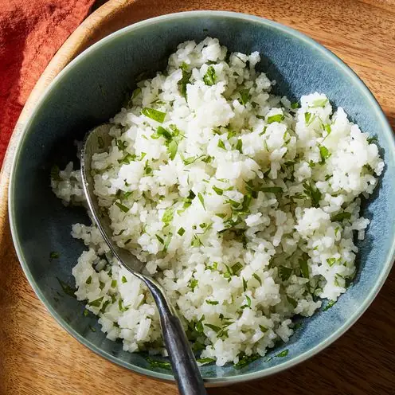

Asian Coconut Rice
- Total time30 mins
- Serves4
- Ingredients6
- Steps5

Ingredients
- 1 ½ cups uncooked jasmine rice
- 1 (14 ounce) can light or full-fat coconut milk, well shaken and stirred
- 1 ¼ cups water
- 2 teaspoons sugar
- 1 ½ teaspoons kosher salt
- 1 teaspoon coconut oil
Directions
- Gather the ingredients.
- Place rice in a fine mesh strainer, and rinse with cold water, stirring rice using your fingers to remove excess starch, until water from rice runs clear, about 1 minute.
- Place rinsed rice, coconut milk, water, sugar, and salt in a medium saucepan; stir until sugar dissolves, about 1 minute.
- Bring mixture in saucepan to a boil over medium heat. Cover, reduce heat to low, and simmer, undisturbed, for 11 minutes. Turn off heat; steam, covered, until rice is tender and liquid is absorbed, about 10 minutes. Uncover and gently stir in coconut oil.
- Enjoy!
Recipe credit: allrecipes.com